Let
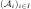
be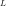
-structures with domains , and
, and  an ultrafilter on
an ultrafilter on  . On
. On 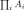
declare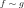
when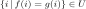
. The ultraproduct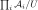
has domain the set of classes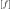
, with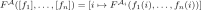
,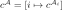
, and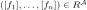
exactly when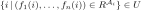
. When all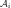
are equal to this is the
ultrapower
this is the
ultrapower 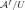
.
The relation  is an equivalence relation, and the operations and
relations above do not depend on the representatives chosen; so the
ultraproduct is an -structure.
is an equivalence relation, and the operations and
relations above do not depend on the representatives chosen; so the
ultraproduct is an -structure.
Reflexivity uses ; symmetry is clear; transitivity holds because
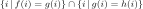
is in and
is contained in 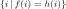
, which is therefore in by
upward closure.
If
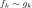
for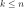
, the intersection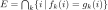
lies in. On  the two tuples agree, so the values of
the two tuples agree, so the values of 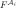
agree there, giving-equivalent representatives; and the sets defining
membership in 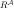
for the two tuples have the same intersection with, so one lies in exactly when the other
does. The domain is non-empty because each is.
Let
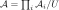
and let be an
assignment into , say
be an
assignment into , say 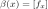
, with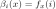
the induced assignments. Then for every formula ,
,
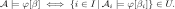
Write
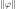
for the index set on the right. For a term , induction on terms gives
, induction on terms gives 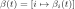
, directly from the definition of the operations. Atomic formulas are then the definition of and of.
Negation:
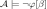
means , which by induction means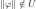
, which by the ultrafilter criterion means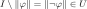
.Conjunction:
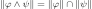
, and a filter contains an intersection exactly when it contains both sets.Existential quantifier. Suppose
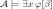
, witnessed by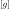
. By induction the set of at which holds under
at which holds under
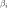
modified at by
by 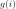
lies in, and that set
is contained in 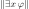
, which is therefore in. Conversely, suppose
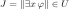
. For each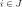
choose a witness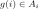
, and define arbitrarily off
arbitrarily off
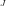
; this is a choice from a family of non-empty sets. Then the set of indices at which holds with interpreted as
contains , hence lies in , so by induction
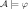
under modified at by
, and therefore .
An -theory every finite subset of which has a model has a model.
Let  be such a theory and let be the set of finite subsets of
. For each
be such a theory and let be the set of finite subsets of
. For each
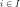
choose a model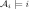
. For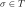
put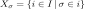
. The family has the finite intersection property, since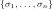
belongs to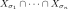
; extend it to an ultrafilter on .
Let . For , every
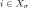
satisfies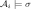
, so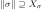
lies in; by the
theorem of Los, . Hence
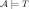
.No set of first-order sentences has exactly the finite structures as its models; and any theory with arbitrarily large finite models has an infinite one.
Let have arbitrarily large finite models and let
say "there are at least  distinct elements", a first-order
sentence. Every finite subset of
mentions finitely many and so has a model, namely a
sufficiently large finite model of . By compactness the whole set
has a model, which satisfies every and is therefore
infinite. Applying this to a would-be axiomatisation of finiteness gives
the first statement.
distinct elements", a first-order
sentence. Every finite subset of
mentions finitely many and so has a model, namely a
sufficiently large finite model of . By compactness the whole set
has a model, which satisfies every and is therefore
infinite. Applying this to a would-be axiomatisation of finiteness gives
the first statement.
The ultrapower of  by a non-principal ultrafilter on
by a non-principal ultrafilter on  is an
ordered field satisfying exactly the first-order sentences true in
and containing an element larger than every real – the class
of a sequence tending to infinity. That is the standard construction of
the hyperreals, and it shows the price of compactness: no first-order
theory can pin down the archimedean property.
is an
ordered field satisfying exactly the first-order sentences true in
and containing an element larger than every real – the class
of a sequence tending to infinity. That is the standard construction of
the hyperreals, and it shows the price of compactness: no first-order
theory can pin down the archimedean property.